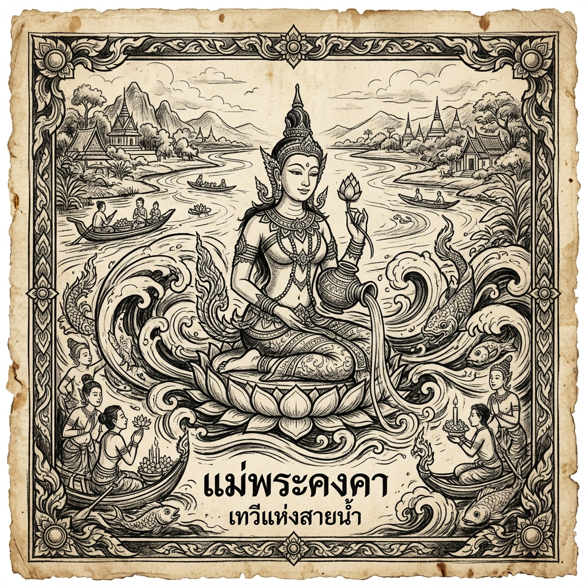
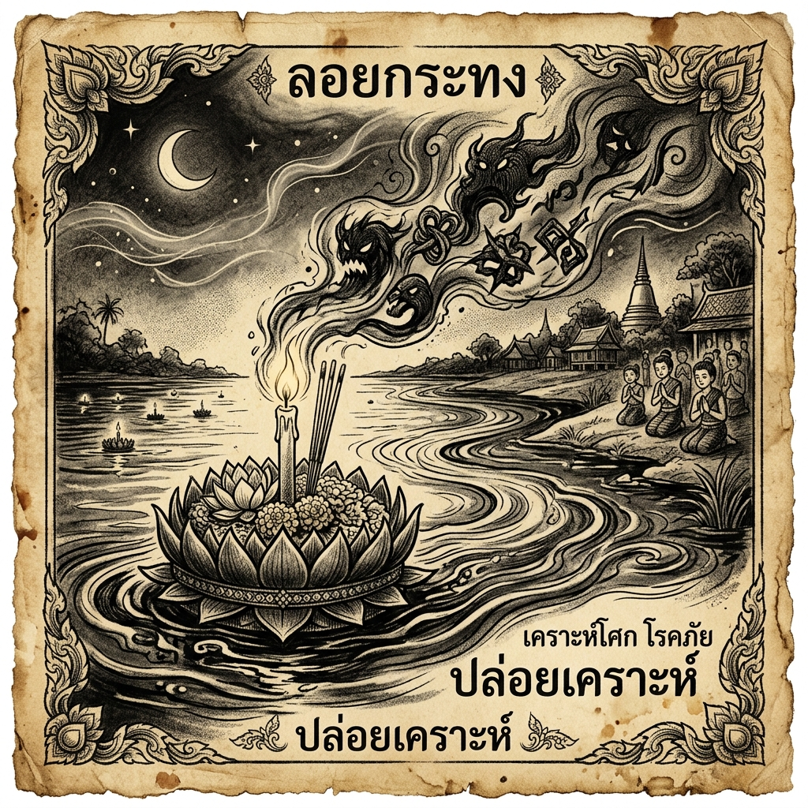
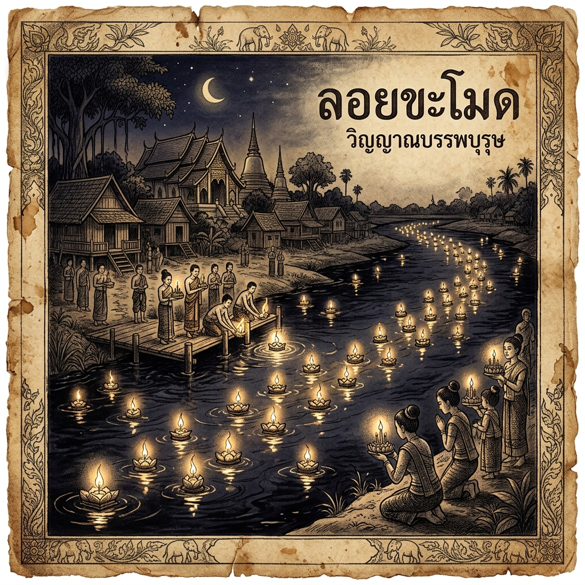
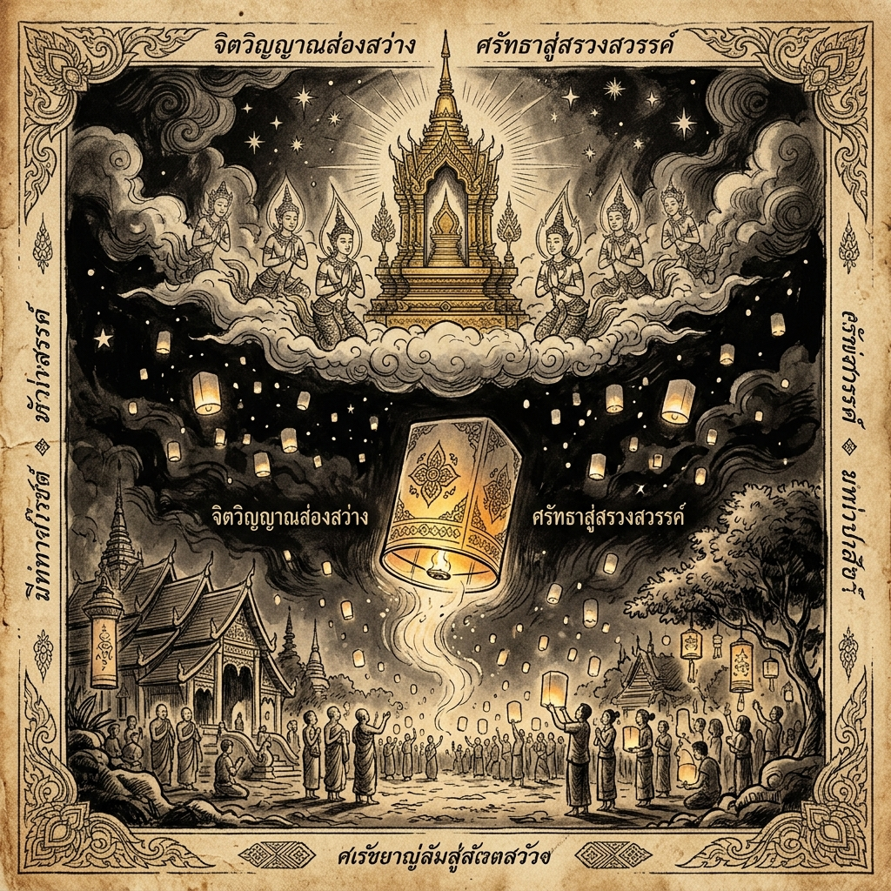
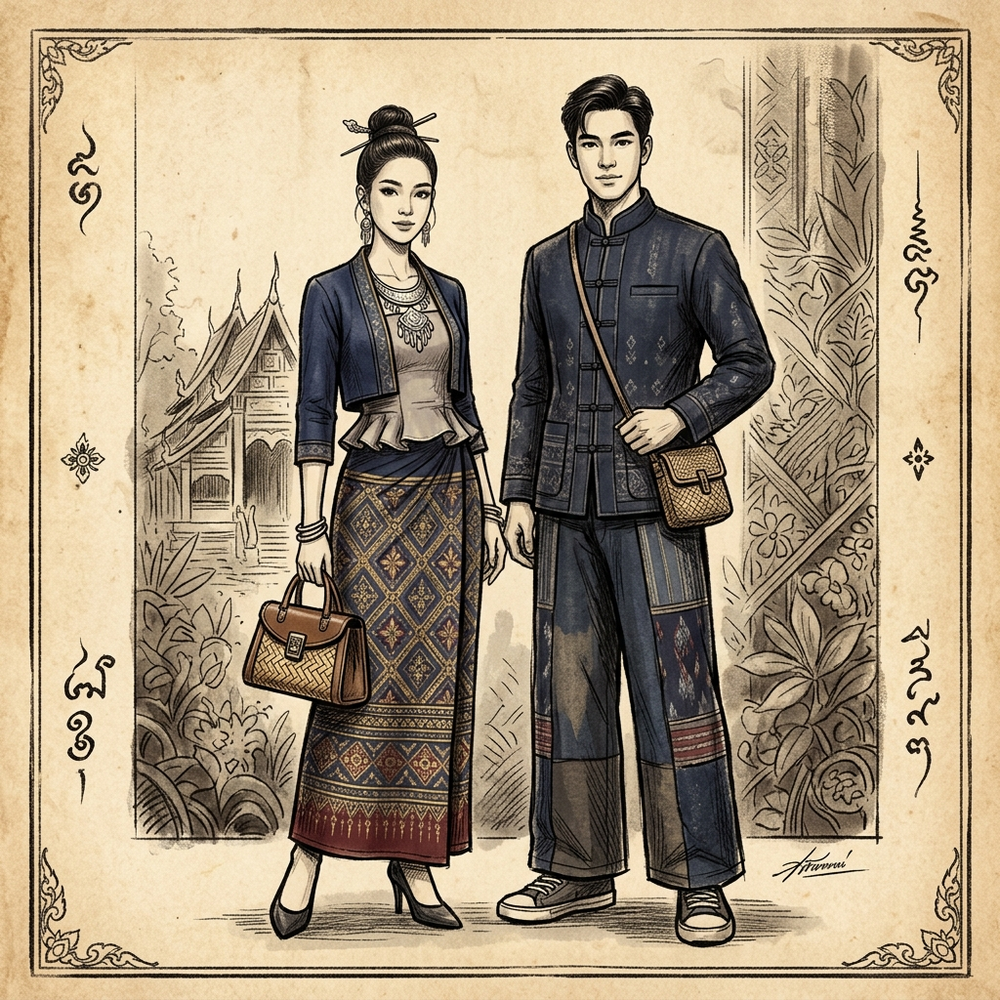

TRADITIONS & SPIRIT
จิตวิญญาณล้านนา
ประเพณีและความเชื่อที่สืบทอดกันมา
TRADITIONS & SPIRIT
ประเพณีและความเชื่อที่สืบทอดกันมา
SPIRITUAL JOURNEY

ไม่ใช่เพียงการบูชา แต่คือการขอขมา "พระแม่คงคา" ที่เราได้ล่วงเกินและใช้ประโยชน์จากสายน้ำตลอดปี สะท้อนถึงคติความกตัญญูที่ฝังรากลึกในจิตใจชาวพุทธ-พราหมณ์
การลอยกระทงในล้านนาคือการ "ลอยเคราะห์" หรือการฝากเอาความทุกข์โศก และบาปกรรมที่ติดตัวมา ให้ไหลลับไปกับกระแสน้ำ เพื่อเปิดรับความเป็นสิริมงคล


ประเพณีที่มีมากว่าพันปี คือการส่งความระลึกถึงและอุทิศส่วนบุญแก่บรรพบุรุษที่ล่วงลับ ผ่านแสงเทียนที่วับแวมกลางสายน้ำราวกับดวงตาของผีโขมด
สูงสุดแห่งศรัทธา คือการส่งโคมไฟขึ้นสู่สรวงสวรรค์ชั้นดาวดึงส์ เพื่อบูชาพระบรมสารีริกธาตุ แสงสว่างเปรียบดั่งดวงประทีปแห่งปัญญาที่นำทางจิตวิญญาณ

หัวใจของยี่เป็งคือการฟังเทศน์ "มหาชาติ" 13 กัณฑ์ หรือ "ตั้งธรรมหลวง" ในคืนวันเพ็ญ ซึ่งเชื่อว่าหากฟังครบในวันเดียวจะได้อานิสงส์มหาศาล
การตกแต่ง "ซุ้มประตูป่า" คือการจำลองป่าหิมพานต์เพื่อรับเสด็จพระเวสสันดรกลับเข้าเมือง เป็นการอัญเชิญสิริมงคลและความมั่งคั่งเข้าสู่ครอบครัว

CONTEMPORARY HERITAGE
การตีความมรดกทางวัฒนธรรมในมุมมองใหม่ ที่นำผ้าทอมือพื้นเมืองมาผสานกับดีไซน์สากลอย่างลงตัว สะท้อนถึงอัตลักษณ์ที่ไม่เคยหยุดนิ่งของชาวล้านนาในยุคปัจจุบัน